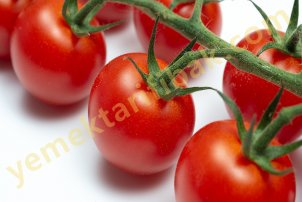

Enginar
Enginar, özellikle Avrupa sofralarının gözde yemeğidir. Kralların devrilmesine rağmen, uzun dönem Fransa'nın başbakanlığını yapan Dük Rişliyö (Richelieu) krala ve saray erkanına sık sık enginar ziyafetleri verirdi. Onsekizinci yüzyıl Fransasında belediyeler lokantalar her öğünde enginar yemeği bulundurulmasını şart koşmuştu.
Enginarın kadrini bizim halkımız da bilir. Yavuklusundan ayrı düşen genç kız hüznünü şöyle dile getiriyor:
Enginarı haşladım
Doldurmaya başladım
Ellerin yari geldi
Ağlamaya başladım
Bir ramazan manisi de enginarı şöyle över:
Pek severler enginarı
Rengi güzel, baldan sarı
Etli pirinç çorbasına
Kullanırlar ekşi narı..
Yararları:
Eski Mısırlıların bulup yetiştirdiği, daha sonra Araplar aracılığıyla İspanya, İtalya, Fransa ve İngiltere gibi Avrupa ülkelerine yayılan enginarın pek çok yararı vardır:
A ve B vitaminleri, manganez, fosfor ve demir gibi madensel tuzlar, azotlu maddeler yönünden zengindir, enginarda bulunan karbonhidratların sindirimi şeker hastalarının bile özümleyebileceği kadar kolaydır.
Karaciğer ve böbrek yetersizliklerine, karaciğer ve böbrek sancılarına, sanlığa karşı etkili bir doğal ilaçtır.
Romatizma ağrılarını giderir.
Astım ve egzamaya karşı devadır.
Kan dolaşımını düzenler ve kanı zehirli artıklardan temizler. Kolestrolün neden olduğu damar sertliği, kalp sancıları, enfarktüs, beyin kanamalan gibi hastalıkları önler.
Cinsel uyanadır. Avrupa'da yaşlı erkekler sofralarında enginara baş köşeyi verirler. Kont Richlieu'nün dostlarına çektiği enginar şölenleri bu yöndün ünlüdür.
Nasıl alacaksınız?
1- Enginarın yapraklarının ucu ne kadar siyahsa sebze de o kadar bayattır. Taze enginar almak istiyorsanız yeşil yapraklannın ucuna bakın.
2- Enginarın sapında delik delik varsa içinde de kurt var demektir. Zira bu delik kurdun yolunu gösterir.
3- Enginarın iyisi ağır olanıdır. Sebzeyi avucunuza alıp okkalayın ve ağınnı tercih edin.
4- yapraklar birbirlerinden çok aynlmışlarsa ya da üstlerinde siyah lekeler varsa bu sebzenin bayatlığını gösterir.
5- Enginarın sapı işe yaramaz. Çoğu zaman satıcılar sapı uzunsa kilodan kazanmaya çalışırlar. İyi bir enginann sapının uzunluğu 10 santimi, yani bir kanşı geçmemelidir.
Nasıl yiyeceksiniz?
1- Bir Fransız atasözü; Mangez du vert, mangez du fer" diyor. Yani bu söz "Yeşil yiyen demir vitamini de alır"anlamına geliyor. Yazık ki ev kadınlannın çoğu enginann en yararlı kısımları olan yeşil yaprakları çöplüğe atıp onun yalnızca göbeğinden yemek hazırlıyorlar, bu yeşil yapraklan da haşlayarak sofraya koyun.
2- Aldığınız enginan aynı gün yemek yapmayacaksınız onu sapıyla ve içisu dolu bir kaba koyarak saklayın.
3- Yemek hazırlarken enginarın sapını bıçakla kesmeyin, elinizle burarak koparın. Böylece sebzeyi de sindirimi güç olan liflerden kurtarmış olursunuz.
4- Pişmiş enginan buzdolabında 24 saatten fazla bekletmeyin. Zira içinde çok çabuk toksinler yani zehirli maddeler oluşur.
5- Toprağa yakın ve bol ilaçla yetişen bir üründür. Yemek yapmadan önce enginan en az üç kez yıkayın.
Nasıl koruyacaksınız?
Elbette ki enginar çiçek değil sebzedir. Ama, hemen pişirmeyip bekleteceksiniz, taze olarak korumak için ona çiçek muamelesi yapmalısınız, bir tasa su doldurun, enginarı saplan aşağı gelecek şekilde tasın içine koyun.
Yararlı Bilgiler
Ev kadınlan enginarın yalnız göbeğini kullanıp, kalan kısmını çöpe atıyor. Uluslararası istatistiklere göre, bir kilo enginann yemekte kullanılan kısmı sadece 360 gramı. Kalanı, yazık ki, çöpe gidiyor. Oysa, yeşil yaprakların da değerlendirilmesi gerekir.
Enginar, bazen tane, bazan da kilo olarak satılır. Bir enginarın ortalama ağırlığını bilmezinde fayda var: 250 gram.
Enginar pişerken ağırlığının yüzde günçünü kaybeder. Yani tencereye koyduğunuz enginar hayli hafiflemiş olarak çıkıyor.

Domates
Gerek çiğ ve salata gerekse yemeklere doğrayıp pişmiş olarak yediğimiz domates mutfağımızın vazgeçilmez sebzesidir.
Nasıl Alacaksınız?
1- Domatesin yapay gübreyle serada yetişeni değil, doğal gübreyle ya da kendiliğinden tarlada yetişeni makbuldür. Bir domatesin sera ya da tarla ürünü olup olmadığını şöyle anlıyabilirsiniz: Sera domatesleri çok kırmızı ve düzgündür. Tarla domatesleri yamru yumrudur. Göbeğinde çatlaklar vardır. Rengi biraz yeşile çalar.
2- Domatesin büyüğünü değil, orta boylusunu ya da küçüğünü alın. Boyu küçüldükçe lezzeti artar.
3- Tarla domatesinin rengi ne kadar kırmızı ise kendisi de o kadar olgun ve suludur.
4- Bitkinin göbeğindeki taç yapraklarına bakın. Yapraklar yeşilse domates taze, yapraklar kuruysa domates bayattır.
5- Kıpkırmızı sera domatesi alacağınıza, rengi yeşil de olsa, bulursanız, doğal tarla domatesini alın. Domatesleri gazete kağıdına sarıp üç gün bekletirseniz kızardıklarını göreceksiniz.
Nasıl Yiyeceksiniz?
1- Domatesi daha çok çiğ ve salata olarak yeyin. İçindeki madensel tuzlar ve vitaminlere kendi asiti de eklenince daha yararlı hale gelir, mide ekşimelerini ve yanmalarını önler.
2- Domatesin kabuğu mide çeperlerine yapışırsa sindirimi güçleşir. Eğer domatesiniz çok olgunsa ya da bıçakla soymak için fazla zamanınız yoksa kaynak suya atıp bir kaç saniye bekletin. Çıkarın, kabuğunun üstüne bıçağın sırtını bastırın, sonra soyun. Kabukların kolayca soyulduğunu göreceksiniz.
3- Toprakla teması yakın olan bir sebzedir. Üretiminde de çok miktarda tanmsal ilaçlar kullanılır. Gerek topraktan gelen mikroplardan, gerekse tanmsal ilaçların kimyasal artıklarından arındırmak için domatesleri çok iyi yıkayın.
4- Domatesi kestiğiniz zaman hepsini yeyin. Yarım bırakıp beklettiğiniz takdirde içinde bulunan ve havaya Karşı çok duyarlı olan A, K ve C vitaminleri oksijenle birleşip yok olur, besin değerini yitirirler.
Nasıl Koruyacaksınız?
1- Domatesleri buzdolabına göbek kısmı alta gelecek şekliyle koyun, böylece çürümesini önlemiş olursunuz.
2- Çürümüş domatesteki mikrop ve bakteriler sağlığınızın en büyük düşmanlarıdır. Domatesin büyük bir bölümü küflenmiş ya da moranp siyah bir renk almışsa o kısmı bıçakla keserek kalanını kullanmaya kalkmayın, domatesi bütünüyle çöp sepetine atın.
3- Domatesin yapısında bulunan A ve K vitaminleri ışığa karşı çok duyarlıdır. Gün ışığında ölüp besin değerini yitirirler. Evinizdeki domatesi loş yerlerde koruyun. Tam olmadan toplanıp, kızarması için güneşe serilen domates kızarır ama vitaminlerinin pek çoğunu da kaybeder.
Yararları:
Fransızlar domatese "Aşk elması" der. Görünüşü kadar lezzeti de hoş olan bu güzel sebzeyi sevmeyen hemen hemen yok gibidir.
Enerji verir ve organizmaya canlılık kazandırır.
Gut hastalığına ve romatizmaya karşı iyi bir doğal ilaçtır.
İskorpit denen diş hastalığını iyileştirir.
Bağırsakları yumuşatır, pekliği giderir.
İdrar söktürür, üreyi azaltır.
Böbrek taşlarının düşmesini kolaylaştırır.
Yapısındaki B vitamini sayesinde sinirleri dinlendirir.
Soğuk Algınlığına Karşı Korur
Domateste bol miktarda C vitamini vardır. Bilindiği gibi, bu vitamin grip, nezle, anjin gibi soğuk algınlığından doğan hastalıklara karşı bedenin direncini arttırır.
Cinsel Gücü Arttırır:
Fransızlann domatese "aşk elması" adını vermeleri boşuna değildir. Domateste A, B ve C vitaminlerinin yanısıra K vitamini de bulunur. Cinsel gücü arttırmak için uygulanan tedavilerde, hormonların yanısıra B, E ve K vitaminleri verilir.
Kadın Cildini Güzelleştirir:
Domateste bulunan sitratlar ve tartratlar kadın cildinin dostudur. Domatesten hazırlanan pek çok güzellik losyonları ve maskları vardır.
Yararlı Bilgiler:
İşiniz aceleyse, domatesin kabuğunu daha çabuk soymak için sıcak suya atıp biraz bekletin. Kabuğunun daha çabuk ve daha kolay soyulduğunu göreceksiniz.
Hazırda kaynar su yoksa domatesin yüzeyini bıçağın sırtıyla bastırarak tarayın. Daha kolay soyulduğunu göreceksiniz.
İçindeki asit sayesinde iştahı açar. Ancak, fazla yendiğinde bu asit ekşime yapar. Akşam yemeklerinde domatesi fazla kaçırırsamz uykunuz da kaçabilir.
Hava kirliliği çağımızın en önemli sorunlarından biridir. Kanınızı zehirlerden temizlemek için zaman zaman domates kürleri yapın.
Midesi zayıf olanların domatesi pişmiş olarak değil, çiğ yemeleri doğru olur.
Börülce
Bir türküde, Egeli delikanlı, sevdiği kızın ince belini börülceye benzetir: "Bahçelerde börülce/ Kız belin ne de ince/ Nidem kuru cilveyi/ Sarılıp yatmayınca"
Ege türkülerinin pek çoğunda börülcenin adına rastlarsınız. Bahçe ve pazarların bu kalem gibi ince ve narin sebzesini özellikle Egeliler çok sever ve gerek tazesini, gerek kurusunu sofralarından eksik etmezler. Taze ve kuru fasulyede olduğu gibi, börülcede de A, B, C vitaminleri, fosfor, potasyum, demir ve kalsiyum mineralleri, ayrıca tazesinde klorofil ve karbonhidratlar var.
Nasıl Alacaksınız?
1- Tazesinin rengi koyu yeşildir. Bayatın rengi sarıya çalar.
2- Tazesi diri ve canlı, bayatı pörsümüştür.
3- İncesi makbuldür. Kalım iplikli ve içli olur. Egeliler buna "bebeli börülce" derler.
Nasıl Yiyeceksiniz?
Az haşlayıp salata şeklinde yerseniz faydasını daha çok görürsünüz. Zira börülcede bulunan B vitamini ve potasyum sıcağa karşı çok duyarlıdır. Yani fazla kaynatılırsa sebzede bulunan vitamin ve madensel tuzların bir kısmı kaybolur.
Yararları
- Madensel tuz ve vitamin gereksinimini karşılar.
- Böbrek taşlarının düşmesine yardımcı olur.
- Fiziksel ve zihinsel yorgunlukları giderir.
- İdrar söktürür, şeker ve karaciğer hastalıklarının iyileşmesini kolaylaştırır.